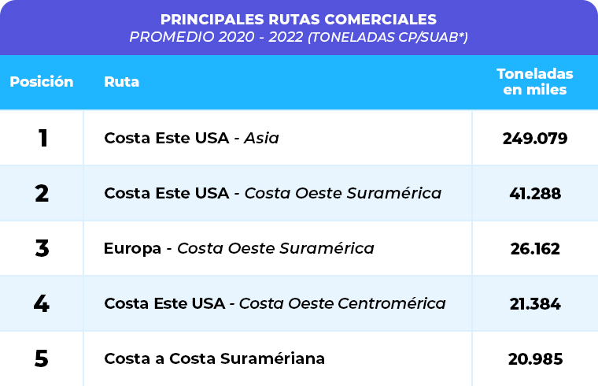

RUTAS

**CP/SUAB: Medida de volumen del Sistema Universal de Arqueo del Canal de Panamá
que equivale a 2,83 m3 (100 pies cúbicos).
USUARIOS

*Toneladas largas (long ton): Una tonelada larga equivale a 2240 libras (1016.047 kg).